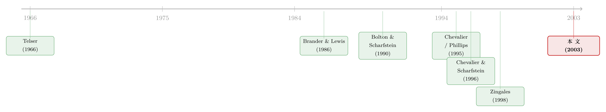

衰退里，谁先「松手」抢市场？——一笔债，如何改写产品市场的胜负
本文读的是 Campello (2003, Journal of Financial Economics)：当宏观需求转冷时，负债会拖累一家公司相对同行的销售增长——但这只发生在「同行普遍不借钱」的行业；在「大家都借钱」的行业里，这种拖累消失了。把镜头拉到行业层面，负债越高的行业，加价（markup）在衰退里升得越凶。一句话，资本结构能不能伤到你，要看你的对手手里也拿着什么牌。
1 引言：一个看似简单、却很难证的命题
公司金融里有一个流传已久的直觉：借太多债，会让你在产品市场上「打不动仗」。资金链一紧，你不敢降价抢客户，不敢砸钱做市场份额，于是对手趁机把你的地盘蚕食掉。这个故事听上去顺理成章，从 Telser (1966) 的「长钱包（long purse）」一路讲到今天。
可是，要在数据里把它「证实」，出奇地难。
难在哪？难在内生性。假设你观察到「负债高的公司，竞争表现差」，你能下结论说是债拖累了它吗？不能。因为一家公司借多少债和它竞争得好不好，很可能同时被一些看不见的东西所决定——行业的集中度趋势、产能过剩、增长前景。Kovenock and Phillips (1997) 和 Zingales (1998) 都提醒过：如果你只是简单地把「资本结构变化」和「事后表现」放在一起跑回归，很容易把一个伪因果安到债务头上。换句话说，也许不是债让公司输了，而是「快要输的公司恰好借了更多债」。
这正是这一整条文献最难迈过去的那道坎：资本结构是公司自己选的。只要它是被选出来的，你就很难说清到底是「债→竞争」，还是「某个第三因素→债 + 竞争」。
那怎么办？Campello 的招数，是不去碰那个内生的资本结构本身，而是去找一个公司和它的债主都没法提前完全算准的外生冲击，然后看「在冲击落地之后」，负债究竟把竞争表现推向了哪个方向。
他选的这个冲击，就是商业周期（business cycle）——更具体地说，是对总需求（aggregate demand）的宏观冲击。
2 识别策略：用「宏观天气」去给一个微观命题做实验
先把核心思路讲清楚。Campello 的假设是：宏观冲击的确切时点、幅度与后果，产品市场的参与者和它们的金主都无法完全预见。 这一步至关重要——它意味着 GDP 的意外下滑，对单个公司而言近似一次「外生的、没排练过的」需求变天。
但仅仅用宏观冲击还不够。因为衰退会同时影响所有公司，你怎么知道是「债」在起作用，而不是别的东西？
于是真正关键的一步在于——他不看单一的敏感度，而看敏感度的差异，而且是在两个维度上同时做对比：
- 时间维度（intertemporal）：同一批公司，在衰退里和在繁荣里，债务对竞争的影响一不一样？
- 横截面维度（cross-sectional）：在「同行普遍低负债」的行业里，债的影响，和在「同行普遍高负债」的行业里，一不一样？
这两层对比叠在一起，就织成了一张相当紧的网。理论预测的不是「债总是有害」，而是一个有条件的图样：债只在「我负债高、对手负债低、且正逢需求向下」这三个条件同时满足时才咬人。能编出一个替代故事、刚好解释「债为什么偏偏在这些行业、这些时点、按这个方向伤人」的，反而很难。这就是为什么这种条件化的对比，比一根孤零零的相关系数有说服力得多。
接着，落到具体的回归。行业层面的检验，模型写成这样：
注意几个细节，它们都是为了堵住质疑：
第一，宏观活动用 -ΔLog(GDP) 来度量——取了负号，所以这个变量上升 = 经济在放缓，正是作者想强调的方向。
第二，杠杆（Leverage）进方程时取的是滞后一期，目的是尽量减小 markup 与杠杆之间的同期联立（simultaneity）。
第三，标准误用 Huber–White 异方差稳健、并允许期内聚类（within-period clustering）（Rogers, 1993）——因为同一个季度里的各行业，会被同一个宏观冲击同时推动。
第四，由于无法拒绝行业固定效应的存在，主回归用一阶差分（first differences）来估计（Hsiao, 1986），把行业层面那些不随时间变的东西扫掉。
整个设计的灵魂，就藏在那个 λ 里。如果 Chevalier and Scharfstein (1996) 是对的，λ 应该显著为正：负债越高的行业，需求一掉，加价就升得越猛。
3 加价从何而来：先把「markup」量准
这里要插一句技术活，因为怎么量加价，直接决定了结论可不可信。
衰退里 markup 看起来「反周期」，有一个老问题：到底是需求冲击导致的，还是成本冲击导致的？如果只是能源涨价把 GDP 砸下去、把价格抬上来，那 markup 的「反周期」可能是假象。为此 Campello 采用了 Bils (1987) 的度量——一个不太容易高估反周期性的代理变量（Rotemberg and Woodford, 1991 指出过这一点），它的好处是允许「多干一小时活」的边际劳动成本随行业工时变化。制造业尤其需要这一点：工时本身随周期波动，而法律强制企业为加班支付溢价。
这个 markup 以「对趋势的对数偏离」写出来：
$$ \text{Markup}_t = \ln\!\bigl(P/MC\bigr) = \ln(P_t) - \ln(w_t) - \ln\!\bigl(1 + r\,V'(H_t)\bigr) - \ln\!\bigl(H_t\,j\,N_t/Y_t\bigr) - \text{trend} - \text{constant} $$
其中 \(P\) 是价格，\(w\) 是小时平均工资，\(r\) 是法定加班溢价（《1938 年公平劳动标准法》定为 50%），\(H\) 是周平均工时，\(V(H)\) 是加班工时，\(j\) 是期内周数，\(N\) 是生产工人数，\(Y\) 是总产出。关键的 \(V'(H)\) 在周工时超过 40 小时时取 1、否则取 0——这正是把「加班溢价」嵌进边际成本的那一笔。数据来源很「手工」：价格来自 BLS 的生产者价格指数，工时与工资来自 BLS 的就业-工时-收入序列，产出来自 BEA（只有年度，作者用季度 GNP 插值到季频）。
为什么要花这么多笔墨在度量上？因为这篇文章的全部说服力，建立在「衰退里 markup 真的升了、而且高负债行业升得更多」这件事上。如果你的尺子本身就系统性地夸大反周期性，那再漂亮的交互系数也是空中楼阁。作者特意选了一把「偏保守」的尺子，等于先把最容易被攻击的地方加固。
4 主要结果：债的伤害，是「有条件」的
行业层面——markup 的反周期，被负债放大了
先看一个基准事实：把 markup 变动单纯回归在宏观活动代理上，GDP 每下滑 1%，行业（相对趋势的）价格-成本边际就上升约 10%（系数 10.08，t = 5.84，在 1% 水平显著）。这印证了宏观文献里早已知道的「加价反周期」。
真正的看点，是加进交互项之后。OLS 固定效应估计里，交互项系数显著为正（t ≈ 2.71）：行业负债越高，衰退中 markup 抬得越快。把它翻译成经济量级——
一个假想的「全债（all-debt）」行业，在 GDP 下滑 1% 时，markup 的上升幅度比一个「零债（zero-debt）」行业多出约
42%。
这个数字相当大，而且它不是脆弱的：作者依次加进产能利用率、市场集中度、产品需求周期性等控制变量，又用能源价格代理来剥离成本冲击（剔除 SIC 35、37 这类能源既影响成本又影响需求的行业），结论都稳得住。
这层结果有一个被作者点出、却容易被读者错过的宏观含义：它意味着过去的企业融资决策，可能在衰退里变成一股通胀压力——资本结构的「副作用」会从公司部门反馈回整个经济。
公司层面——只有「鹤立鸡群」的负债才致命
行业证据之后，一个自然的问题是：那单个公司呢？Campello 转向一套覆盖 71 个行业、横跨二十多年的季度面板，问题变成：「公司销售对债务的敏感度」如何随宏观冲击变化，且这种变化在低债行业与高债行业之间有何不同。
结论干净利落，而且带着一个漂亮的反转：
- 在低债行业里，比较两家公司——一家负债率比行业均值高 10%，一家低 10%——在 GDP 下滑 1% 之后，负债更高那家的「行业调整后季度销售增长」要低
1.3%。债，确实在伤人。 - 但反转在于：在高债行业里，这种效应消失了。同样的宏观冲击、同样的负债差距，债却不再拖累销售。
于是整篇文章的核心，浓缩成一句话：债能不能伤到你，不取决于你借了多少，而取决于你的对手借了多少。 当对手手头宽裕（低负债）时，你的财务脆弱就是一张被人利用的软肋；当对手和你一样背着债时，没人有余力发动掠夺，于是你的债也就没那么疼了。这一组结果对估计方法、对宏观活动的不同代理、对不同子样本都稳健，也经得起「行业融资决策与该行业需求周期性之间可能存在内生性」这一质疑的检验。
值得一提的是，作者很诚实地承认：公司层面的发现，无法排除一个「状态依赖版」的 Telser (1966) 长钱包故事——即在低需求实现的条件下，负债公司在对手相对无杠杆时丢更多份额、在对手也负债时丢更少。它和 Chevalier-Scharfstein 的机制在这里观测上难以分辨。这种坦白，恰恰是这篇文章扎实之处。
（关于「债务如何在产品市场上变成一种武器或软肋」，可对照参见《威胁还没来，债先「续」上了——航空公司如何为一场尚未发生的价格战提前锁定长债》与《深口袋的价格战：藏在折扣店货架上的「掠夺」指纹》。）
5 文献脉络：从「长钱包」到「商业周期」
这条研究的起点，是一个非常古典的直觉。Telser (1966) 提出「长钱包/掠夺」论：依赖外部融资会削弱你抵抗竞争的能力，而财务不受约束的对手会借机发动掠夺。这个口头故事，被 Bolton and Scharfstein (1990) 用金融契约里的代理问题正式模型化。

与「长钱包」并行的，还有两条岔路。一条是 Brander and Lewis (1986)（以及 Maksimovic, 1986）的「战略承诺」论——债反而是好事：在有限责任下，债的期权式收益使公司有动机更激进，从而逼迫无杠杆对手退让产量。另一条是 Maksimovic and Zechner (1991)、Williams (1995) 的「行业均衡」论——债与表现之间是非因果的共生：盈利的大公司天然用更多债、更多固定资本投资，而小而不那么盈利的公司用低债，二者在均衡里共存。
把这些理论第一次推向严肃实证的，是 Chevalier (1995a, b) 对超市行业、Phillips (1995) 对若干制造业、以及 Kovenock and Phillips (1997) 的开创性工作。而真正给本文搭好「靶子」的，是 Chevalier and Scharfstein (1996)：他们论证流动性受限的公司在清算概率高时不愿投资于市场份额建设，于是衰退中外部融资公司会以牺牲未来销售为代价抬高加价；由于价格是战略互补的，对手也会跟着抬价，但抬多少取决于对手自己的财力——于是行业 markup 的周期性，同时由本公司和对手的资本结构决定。
Campello 这篇文章站在哪？它和 Chevalier and Scharfstein (1996)、Zingales (1998)、Khanna and Tice (2000) 一脉相承——都借助外生事件（石油冲击、放松管制、新进入者）来打断竞争环境。但前人多给出「特定时间、特定行业」的结论，而本文用商业周期这个反复发生、又覆盖整个制造业的冲击，第一次同时容纳了公司层面与宏观层面的推断，把「资本结构影响竞争表现」这件事，从一两个行业的轶事，提升为一个普遍且经济上显著的规律。
6 评论与延伸（Q&A + 研究方向）
(a) 几个可能的疑问
Q：用 GDP 冲击当「外生变量」，真的外生吗？公司难道不会把宏观预期写进资本结构里？
作者承认这个可能，并在部分检验里允许公司将宏观效应内生化进融资决策。但关键论点是：我们并不知道公司会如何把这些效应纳入资本结构；既有文献（Gertler and Hubbard, 1993；Lamont, 1995）表明，由于税制偏向、制度摩擦、以及代理人之间缺乏协调，最优的「风险共担式」资本结构在实践中往往不可行——也就是说，即便预期能被部分纳入，债的「副作用」仍会被观测到。识别靠的不是 GDP 绝对外生，而是其确切时点、幅度、后果难被完全预见。
Q：这到底是在检验 Chevalier-Scharfstein，还是在检验 Telser 的「长钱包」？
行业层面的 markup 反周期性，是 Chevalier-Scharfstein 的直接预言；但公司层面「负债公司在对手无杠杆时丢更多份额」的结果，无法排除一个状态依赖版的长钱包/掠夺故事。作者诚实地指出，这两个机制在他的数据里观测上难以分辨——它们都把「对手的资本结构」当成胜负的关键。
Q：衰退里 markup 升高，会不会其实是成本冲击（比如油价）造成的假象？
这是最要命的混淆。作者用 Bils (1987) 这把「偏保守」的尺子来量 markup，又额外加入能源价格代理来吸收成本冲击，并剔除 SIC 35、37 这类能源同时冲击成本与需求的行业。结论不变。这正是为什么前面要花一整节讲度量。
Q：行业用两位数 SIC 划分，会不会太粗，把不相干的公司归成「同行」？
这是一个真实的局限。文献里 Clarke (1989)、Kahle and Walkling (1997) 都讨论过 SIC 作为「经济市场」边界的噪声。两位数 SIC 把异质的细分市场混在一起，会让「行业杠杆」这个对手画像变模糊，多半使估计偏向保守（衰减向零）。能在这样粗的分类下仍打出显著的交互项，反而说明效应不弱。
Q：那个「42% more」是不是把估计外推到了样本里根本不存在的『全债 vs 零债』极端？
是的，这是一个线性外推出来的对比量级，用来传达经济显著性，而非样本里真有这样的行业。读者应把它理解为「斜率有多陡」的直观刻画，真正的统计证据是那个 t ≈ 2.7 的交互系数本身。
Q：公司层面结果用「相对行业」的销售增长，会不会把效应人为做没/做大？
用「相对行业」是有意为之——它把整个行业共同的需求冲击差掉，留下的是公司相对同行的此消彼长，正好对应「份额在对手之间重新分配」这个机制。代价是你测不到行业整体的萎缩，只能测「谁抢了谁」。对本文要回答的问题，这是恰当的取舍。
(b) 几个可能的研究问题与提案
1. 把同样的逻辑搬到公司债二级市场流动性上。
【经济故事】衰退里负债公司被迫抬价、丢份额，这种「竞争脆弱」应该被债券市场定价。一个自然猜想：在低债行业里，高杠杆发行人的债券在衰退中流动性恶化更快（买卖价差走阔、深度变薄），因为做市商预见到其基本面更易塌。 【可行性】高。用 TRACE 的成交数据构造流动性度量，按 Campello 的行业杠杆划分做交互，识别策略可直接沿用 GDP/NBER 衰退冲击。数据现成，识别清晰。
2. 外资持有人会不会改变「对手画像」？
【经济故事】Campello 的机制依赖「对手有没有余力掠夺」。如果一个行业的低债对手背后站着深口袋的外资机构，掠夺能力可能被放大；反之，外资在危机中「资本外逃」式撤离，又可能让对手突然变脆。把「对手的资本结构」升级为「对手的资金来源结构」是一个自然延伸。 【可行性】中。需要把 FactSet/13F 持仓与行业层面对手特征拼起来，外资身份的度量较脏；识别可借助 MSCI 可投资度变化等准自然实验。
3. 信贷供给冲击 vs 需求冲击，谁才是真正的扳机？
【经济故事】GDP 下滑同时混着「需求变冷」和「信贷收紧」。如果真正起作用的是信贷供给（公司想借却借不到），那政策含义完全不同。能否用一次纯粹的信贷供给冲击（如银行去杠杆事件）替换 GDP 冲击，复现这套「债× 对手杠杆」的交互图样？ 【可行性】中。可借鉴 Lown and Morgan (2001) 的银行信贷标准调查，或用区域性银行冲击做工具；难点在于把信贷供给与需求干净地分离。
4. 用更细的产品级数据重做一遍。
【经济故事】两位数 SIC 太粗。若能在更细的产品/工厂层面（如 Census 的微观数据）度量价格、份额与杠杆，就能直接观察「谁向谁抬价、谁丢了哪个细分市场」，把机制从行业平均拆到具体战场。 【可行性】中偏低。Census-COMPUSTAT 匹配、杠杆的工厂级分摊都很费功夫，且需保密数据中心权限——doable 但门槛高。
7 我的判断
这篇文章的贡献，在我看来不在于发明了某个新理论，而在于它漂亮地解决了识别问题。资本结构与产品市场这条线，最大的敌人一直是内生性；Campello 没有去硬刚那个内生的杠杆，而是用「商业周期 × 对手杠杆」的双重对比，构造出一个替代故事极难模仿的条件化图样。"债只在我高、对手低、且需求向下时才咬人"——这个图样太具体了，具体到几乎任何遗漏变量偏误都难以伪造。这是方法论上的真功夫。
对识别的担忧，我有两点。其一是行业边界：两位数 SIC 把「对手」画得很粗，「行业杠杆」这个核心自变量的测量误差不容小觑——好在它多半使结果偏保守。其二是机制不可分辨：公司层面的结果同时兼容 Chevalier-Scharfstein 与状态依赖的长钱包，文章诚实地承认了，但这也意味着它证明了「资本结构影响竞争」，却没能裁决「靠哪种机制」。
后续我最想看到的，是把这套逻辑接到信用市场上：竞争脆弱如果是真的，它应该在债券利差和流动性里留下指纹。二十多年过去，TRACE、机构持仓、更细的微观数据都已就位，重做并扩展 Campello 的这张「对手画像」，会是很有价值的一步。
参考文献
- Bils, M. (1987). The cyclical behavior of marginal cost and price. American Economic Review 77, 838–855.
- Bolton, P., & Scharfstein, D. (1990). A theory of predation based on agency problems in financial contracting. American Economic Review 80, 93–106.
- Brander, J., & Lewis, T. (1986). Oligopoly and financial structure. American Economic Review 76, 956–970.
- Campello, M. (2003). Capital structure and product markets interactions: evidence from business cycles. Journal of Financial Economics 68(3), 353–378.
- Chevalier, J. (1995a). Capital structure and product-market competition: empirical evidence from the supermarket industry. American Economic Review 85, 415–435.
- Chevalier, J., & Scharfstein, D. (1996). Capital-market imperfections and countercyclical markups: theory and evidence. American Economic Review 85, 703–725.
- Kovenock, D., & Phillips, G. (1997). Capital structure and product market behavior. Review of Financial Studies 10, 767–803.
- Maksimovic, V., & Zechner, J. (1991). Agency, debt, and product market equilibrium. Journal of Finance 46, 1619–1643.
- Phillips, G. (1995). Increased debt and industry product markets: an empirical analysis. Journal of Financial Economics 37, 189–238.
- Telser, L. (1966). Cutthroat competition and the long purse. Journal of Law and Economics 9, 259–277.
- Williams, J. (1995). Financial and industrial structure with agency. Review of Financial Studies 8, 431–474.
- Zingales, L. (1998). Survival of the fittest or the fattest? Exit and financing in the trucking industry. Journal of Finance 53, 905–938.